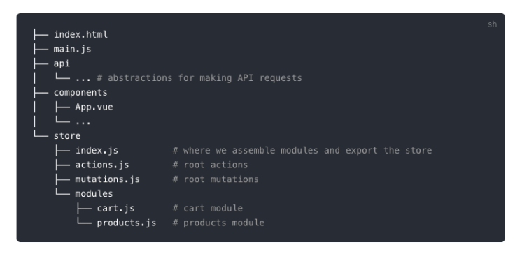

文件结构目录树自动生成
这篇文章发布于 2019/12/05，归类于 计算机基础与开发工具
标签：
文件结构生成，文件目录树生成
在我们写README.md时，如果需要描述一个文件的目录结构，就需要使用可以自动生成文件目录树的工具了，这里总结下一些实践经验
使用treer npm命令行工具
npm install treer -g # 全局安装treer安装成功后，系统里就会多出一个treer命令，使用方法
$ treer --help
Usage: treer [options]
Options:
-h, --help output usage information
-V, --version output the version number
-d, --directory [dir] Please specify a directory to generate structure tree
-i, --ignore [ig] You can ignore specific directory name
-e, --export [epath] export into file示例: 查看指定目录的目录树
$ treer -d ./src/notes/2019/12 # 查看目录结构
12
├─:not和:nth 混用的问题.md
├─ES2020 '?.' 与 '??' 操作符.md
├─_info.json
├─can't find module node_sleep.node.md
├─failed at the phantomjs-prebuilt@2.1.16 intsall script.md
├─git clone大文件仓库超时问题.md
├─iconfont icon是如何加载成功的.md
├─npm设置下载源.md
├─sessionStorage和localstorage的区别.md
├─vue路由懒加载时import里面不能是变量的问题.md
├─使用URLSearchParams将对象转为url查询字符串.md
└文件结构目录树自动生成.md更好看的一种风格
上面的样式不怎么好看，且不支持js引用操作，有时间可以优化下，好的样式

实例
在 zuo11.com的README.md里就是结合上面两种方法来生成的目录树结构，效果查看: zuo11.com - github
├── src # 写博客文章的目录
│ ├── _config.json # 全局配置文件
│ ├── global.js # 全局js
│ ├── global.css # 全局css
│ ├── images # 图片目录
│ │ ├── blog # 专门放博客图片的目录
│ │ └── favicon.ico # 站点icon
│ └── notes # 博客文章，按年月分目录
│ ├── 2016
│ │ ├── 10 # 每个月份目录下放当月写的文章及当前月的配置文件
│ │ │ ├── _info.json # 配置文件记录了当前目录下每篇文章的配置、seo参数等
│ │ │ ├── xxx1.md # 博客文章
│ │ │ └── xxx2.md
│ │ ├── 11
│ │ └── 12
│ ├── ...
│ └── 2020 # 2020年目录
│ ├── 1 # 2020年1月目录
│ │ ├── _info.json
│ │ └── xx45.md
│ └── 2
├── LICENSE # 开源协议 Apache 2.0
└── README.md # 说明文档